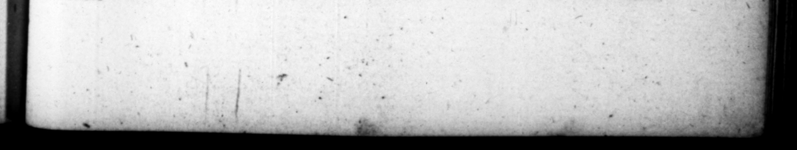

T. FL'DOMITIANUS, $3 2 2 the ings in the Uinces to be cur down, except; | w but. one half of them page, Fr : vinciis vineta fucciderentur, relicta, ubi plurimum, dimidia parte : nec exſequi rem perſeveravit. Quædam ex maximis officiis inter libertinos militeſque Romanos communicavit. Geminari legionum caſtra prohibuit : nec plus, quam mille num nos a uoquaàm ad ſigna deponi quod Antonius apud duarum legionum hiberna, res novas moliens, fiduciam cepiſſe etiam ex depoſitorum ſumma videbatur. Addidit, & quartum ſtipendium militi, aureos ternos. =— I Wen 8. Jus 8 & induſtrie dixit. erumque & in foro pro Tribunali extra ordinem ambzitioſai; - Centumvirorum _____ _ it. Recuperatores, ne ſe ſemper perF ſortis aſlertionibus accommodarent, identidem aumonuit. Nummarios judices cum ſuo quemque conſſlio notavir. Auctor & Tribunis pleb. fuir, zdilem ſordidum repetundarum accnſandj, judiceſque in eum a Senatn petendi. Magiſtratibus quogue urblci-, provinciarumque lidibus coercendis, tantum cure adhibuit, ut neque modeſtiores umquam, neque Juſtiores exſtiterint: 6 quibus plero:que poſt illum reos omnium criminum vidimus. Sulcepta moram correctione, licentiam theatralem promiſcue in equire ſpectandi inhibuit. S2ripta famoſa, . vulgoque edita, quibus primores virt ac feminz notabantnr, abolevit, non ſine auctorum ignominia. Qusſtorium virum, quod eſticulandi ſaltandique ſtuTio teneretur, movit Senatu, Probrofis feminis lecticeæ uſum ademit: juſque capiendi legata hzreditatefque. Equitem Romanum ob reductam J. * | 1 2 2 2 9 «4 th ——_ pb \ Land” . 1 * * 2 « y 7 7 | is. 2 But be did not go on with the txtcution % this . proje. Same of th: 775 Mees about court be conferred 7 reed. men and 417 He ferbid 2 gion: where i encarnp together, and me a thouſand 7 5 to s ; becauſe it was 7 be TC. An tom? had — e bu late rebellious deu, I the great ſum delited in the military cheſt, by the two ions be had together in th; ſame winter-quarter:. He mad? an addition to the ſoldier's pay of three gold Pieces @ ear. 8. He was in the adminiſtration of Juſtice very dilizent and induſtrings and * at in the — ye of courſe to cancel the jus gement. of the centumviral court, that had been procured by favour ard intereft. H: now and then warned the junges called recoverers, to have a ce of being too eaſy in 2 of claims fer liberty ee thor rel bl infamy uadzes that t ber together 21:b rhe #ffeſſo's.” Hr likewiſe put the tribun:s of the commons upon proſecuting à corrup? ade fer etortion, and firing” Judges fer his tryal. He likewiſe took ſuch effeFual care fir puniſhing the city mag iftr 1te;, and gouernour of prove ces guilty of any male-aariniſtratzon, that they mere never at any other time more modeſt or more juſt * moſt of which ſence his reign we haue ſcen proſceuted for all manner of crimes, Having ta ken upon him th: reformation of the publick mamers, he. reſtramed the li" cence of the populace in ſetting promiſ. cuoully with the knights m the theater, Scandalous lib:ls publiſhed to defame perſons of qualit», ather 22 or lady. he ſuppreſt'd, not without 4 mark of infamy upon the authors. . He un 4 Dn:ſtrian gentleman out of the ſ:nate, for the praftice of mimickry and dancing. He debarred infamous women the uſe of the ſedan © as alſo the right of receiving legacys or inhiriting e. 9 eee eee. fore them. He ſet mark of. om the ' ſenate
